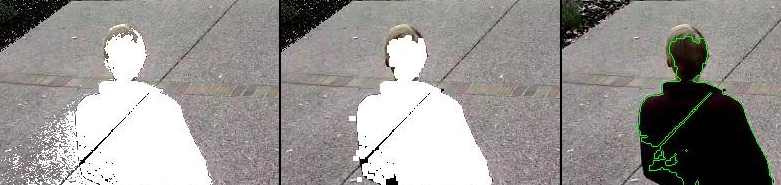

Zones are used for image analysis in ZoneMinder and Zone definition has a significant effect on the effectiveness and performance of a ZoneMinder server. An optimally configured Zone will reduce CPU processing requirements as well the number of unintended saved events. Therefore, it is important to understand the concepts behind the many Zone types as well as Zone parameter settings and their proper use. From the Console interface, click on the number in the Zones column of any monitor to enter the Zone view.
An illustrative (but not very practical) example is shown above to help introduce the items found in the Zone View.
[A] Monitor View
Shows the selected monitor live view with overlay of existing defined Zones and their respective regions. An existing Zone can be edited by clicking on its region. Note that the different types of Zones are depicted with specific colours. The default Zone type is Active shown in red, Inclusive Zones are orange, Exclusive Zones are purple, Preclusive Zones are blue, Inactive Zones are grey and Privacy Zones are opaque black. The definition for each Zone type is explained below in the Zone Parameters section.
[B] Zone List
Lists the existing defined Zones for the monitor along with their Type and Area given in both number of pixels and area in percent relative to the entire monitor image. Knowing the number of pixels in a Zone region will be necessary for setting many of the Alarm Check related parameters. An existing Zone can be edited by clicking on its Name.
[C] Mark
Used for deleting Zones. Check each box of the Zone to be deleted and click DELETE.
[D] +ADD NEW ZONE
Click +ADD NEW ZONE to add a new Zone for the monitor.
To modify an existing Zone, from the Zone View, click on either the Zone region or Zone Name. After making any changes to the Zone Parameters, click SAVE.
The right side of the display contains the Zone analysis parameter information. This is where the analysis type and various tuning parameters can be set. The user can manually fine tune the analysis settings or if desired various Preset options are available.
[A] Name
Each Zone can be named for reference purposes which will be used for logging and debugging. Choose a Name that helps uniquely identify the Zone.
[B] Type
The Zone Type determines the image processing method and is one of the more important concepts in ZoneMinder.
Active: This is the default Zone type and triggers an alarm when motion is detected within it. Most Zones will use this type. Only Active and Exclusive Zones can initiate the triggering of an alarm.
Inclusive: This Zone type can be used for any Zones that you want to trigger an alarm only if at least one Active Zone has already triggered one. For example this could cover an area of the image like a plant or tree which moves a lot and would trigger many alarms. Perhaps this is behind an area to be monitored though, in this case create an Active Zone covering the non-moving parts and an Inclusive Zone covering the tree perhaps with less sensitive detection settings. If something triggers an alarm in the Active Zone and also in the Inclusive Zone they would both be registered. The resulting alarm would be larger than if it had been blanked out altogether.
Exclusive: Triggers an alarm when motion is detected within it, as long as no alarms have already been triggered in an Active zone. This is the most specialized of the Zone types. For instance for the camera covering my garden I keep watch for a hedgehog that visits most nights and scoffs the food out of my cat’s bowls. By creating a sensitive Exclusive Zone in that area I can ensure that a hedgehog alarm will only trigger if there is activity in that small area. If something much bigger occurs, like someone walking by, it will trigger a regular alarm and not one from the Exclusive Zone. Thus, it can be ensured that alarms for big events are captured as well as special small events. Any others are ignored.
Preclusive: If triggered this Zone type will preclude an alarm being generated for that image frame. So motion or other changes that occur in a Preclusive Zone will have the effect of ensuring that no alarm occurs at all. The application for this Zone type is primarily as a shortcut for detecting general large-scale lighting or other changes. Preclusive Zones are designed to be fairly small, even just a few pixels across, with quite low alarm thresholds. They should be situated in areas of the image that are less likely to have motion occur such as high on a wall or in a corner. Should a general illumination change occur they would be triggered at least as early as any Active Zones and prevent any other Zones from generating an alarm. Obviously, careful placement is required to ensure that they do not cancel any genuine alarms or that they are not so close together that any motion just hops from one Preclusive Zone to another. Preclusive Zones may also be used to reduce processing time by situating one over an Active zone. The Preclusive Zone is processed first; if it is triggered the rest of the Zones will not be processed. See Extend Alarm Frame Count below for a way to hold the Preclusive Zone active for an extended period.
Inactive: Suppresses the detection of motion within it. This can be layered on top of any other Zone type, preventing motion within the Inactive Zone from being effective for any other Zone type. Use Inactive Zones to cover areas in which nothing notable will ever happen or where false alarms would occur that don’t relate to what is being monitored. Inactive Zones may be placed over other Zones to reduce detection areas. As a general practice Zones should abut each other instead of overlapping to avoid processing of the same area more than once.
Privacy: Blackens the pixels within it to make the region completely opaque. This can be used to hide regions within the image if the situation does not allow another solution. This Zone type is different from all the others in that it gets processed as soon as possible during capture (even before the timestamp is added to the image) and is not part of the analyzing process. Note that if a Privacy Zone is added, changed or deleted, the changes will not be seen in the image until the capture process is restarted. This is done automatically, but generally takes a few seconds.
[C] Preset
The Preset chooser sets sensible default values for the Zone parameters based on computational needs (fast or best) and sensitivity (low, medium, high). It is not required to use a Preset but if one is selected, the parameters can be subsequently changed as desired. For a ZoneMinder server running on modern equipment with few monitors, the ‘Best, high sensitivity’ Preset can be chosen as a good starting point.
It is important to understand that the available Presets are intended merely as a starting point. Because every camera view is unique, they are not guaranteed to work properly in every case. Presets tend to work acceptably for indoor cameras where the objects of interest are relatively close and typically there are few or no unwanted objects moving within the camera view. Presets, on the other hand, tend to not work acceptably for outdoor cameras where the field of view is typically much wider, objects of interest are farther away and changing weather patterns can cause false triggers. For outdoor cameras the motion detection will need to be tuned for each Zone to obtain desired results.
[D] Units
Selects the method for entry of Zone area parameters.
Pixels: Selecting this option will allow the analysis parameters related to area to be entered or viewed in units of Pixels. The advantage of using Pixels for area parameters is that it allows a more fine-grained control of the settings.
Percentage: Selecting this option will allow the analysis parameters related to area to be entered or viewed as a Percentage. These Percentage values refer to the area of the Zone region and not the monitor image as a whole. This facilitates the estimation of area in most cases.
[E] Alarm Colour
These parameters can be used to individually colour the Zone alarm overlay pattern. Alarms in this Zone will be highlighted in the alarm colour. The RGB colour system is used with a range of values of 0-255 for each primary colour. This option is irrelevant for Preclusive, Inactive and Privacy Zones and will be disabled.
[F] Alarm Check Method
There are three Alarm Check Methods. They are applied sequentially and are layered. In AlarmedPixels mode, only the AlarmedPixels analysis is performed. For FilteredPixels mode, the AlarmedPixels analysis is performed first, followed by the FilteredPixels analysis. Using the Blobs mode, all 3 analysis methods are performed sequentially. An alarm is triggered only if all of the enabled analysis mode criteria are met. For performance reasons, as soon as the criteria for one of the analysis modes is not met, the alarm checking for the frame ends. Because the subsequent modes each require progressively more computations, it is a good idea to tune the parameters in each of the activated layers.
AlarmedPixels: Alarmed pixels is the first layer of analysis and is always enabled. It is recommended to start with this method and move on to the subsequent methods once the effects of the related analysis parameters are understood. In the AlarmedPixels mode, 2 parameter categories are available for tuning: Min/Max Pixel Threshold, and Min/Max Alarmed Area.
FilteredPixels: Selecting the FilteredPixels Alarm Check Method adds another layer of analysis to the AlarmedPixels check along with 2 additional parameter categories for tuning. This layer works by analyzing the alarmed pixels identified in the first layer. Alarmed pixels are disregarded, in this and future layers if enabled, if they are not in groups of a minimum small square size. Primarily, this filtering removes isolated alarmed pixels that may be artifacts of the camera, lens, or compression.
Blobs: When two or more Filtered areas touch or share a boundary, it is sensible to evaluate the regions as one contiguous area instead of separate entities. A Blob is a contiguous area made up of multiple filtered areas. Whereas FilteredPixels is useful for excluding parts of the image that are not part of the actual scene, Blob filtering is better suited to disregarding areas of the actual scene that are not of interest.

Alarm Check Method Comparison (Left to Right): AlarmedPixels, FilteredPixels, Blobs
The images above serve to illustrate Alarm Check Methods. AlarmedPixels is performed first on the image on the left with a person entering the Zone region. Pixels in white exceeded the Minimum Pixel threshold. However, as one can see there are many pixels included that are not part of the person to be detected. This is due to the motion of the person across the Zone region relative to the reference frame. FilteredPixels Alarm check is performed next which has the effect of eliminating many of the residual pixels that are not of interest. Blob Alarm Check is the final process performed and combines contiguous regions of the FilteredPixels. The result of this final process can be seen as a green Blob outline of the person detected in the final image on the right.
[G] Min/Max Pixel Threshold (0-255)
Used by AlarmedPixels Alarm Check. In the AlarmedPixels layer of analysis each individual pixel of the image is compared to the current reference image. Pixels that are different from the reference image are considered alarmed pixels. However, small aberrations in lighting or auto exposure camera adjustments may cause the explicit value of a pixel to vary by small amounts from image to image. This parameter sets the limit for what will be considered a changed pixel. For example, if the camera points at a blank white wall and a black coloured item is raised into view, then the change in any one pixel will be extreme. If however, a white piece of white paper is raised then the change in an individual pixel will be much smaller.
The Minimum Pixel Threshold setting should be high enough to prevent minor lighting, imaging, or compression changes from triggering an alarm. A good starting point for the Minimum Pixel Threshold is 40, meaning that the difference in pixel value from must be greater than 40. A good default for the Maximum Pixel Threshold is 0 which indicates that all differences above the Minimum Threshold are considered a change.
[H] Filter Width/Height (Pixels)
Used by FilteredPixels Alarm Check. This parameter is always specified in Pixels, even when Percent is the selected Unit. It specifies the size of the group of pixels surrounding a given pixel that must be alarmed pixels for the pixel itself to be considered a filtered pixel. The width and height should always be an odd number. The default value is 3 x 3, and 5 x 5 is also suggested as a sensible alternative. Avoid using large numbers for the width and height of the filter area. When using the Blobs Alarm Check Method, FilteredPixels can be effectively disabled by setting either the width or height to a value less than 1.
[I] Zone Area
Zone Area is a display only parameter and is calculated from the Zone Regions which is described in the section below. When Units are set to Percent, the Zone Area displays the area of the Zone region relative to the entire monitor image. When Units are set to Pixels, the Zone Area displays the number of pixels contained in the Zone region. Note that the Zone Area and pixel count can also be found on the main Zone View. All 3 Min/Max Area parameter groups are based on the Zone Area as the maximum value and all 3 are interpreted in the Units specified in the Units parameter.
[J] Min/Max Alarmed Area
Used by AlarmedPixels Alarm Check. The pixel count or area of alarmed pixels is used in this first layer of analysis to determine if an alarm is triggered. If the pixel count or area percentage is above the minimum Alarmed Area, but less than the maximum Alarmed Area, an alarm is triggered. These settings depend on the size of the object to be captured: a value too low may cause false alarms, while a value too high might not detect small objects. A good starting point for both the minimum and maximum are 0 and 0, indicating that any number of alarmed pixels (or any percentage) greater than 0 will trigger an alarm. The frame scores from logged events can then be used to bring the minimum up to a reasonable value. An alternative starting point for the minimum Alarmed Area (in percent) is 25% of the area that an object of interest takes up in the Zone region. For example, if a subject moving through the frame takes up approximately 30% of the Zone region, then a good starting minimum Alarmed Area is about 7.5%.
[K] Min/Max Filtered Area
Used by FilteredPixels Alarm Check. Applying the FilteredPixels analysis results in an area that is less than or equal to the Alarmed Area. Thus, the minimum and maximum Filtered Area parameters for alarm should be equal to or less than the corresponding Alarmed Area parameters, or the FilteredPixels analysis will never trigger an alarm. In particular, it is useful to raise the minimum Alarmed Area parameter until false events from image artifacts disappear, then setting a minimum Filtered Area parameter less the minimum Alarmed Area parameter by enough to capture small events of interest.
[L] Min/Max Blob Area
Used by Blob Alarm Check. The Blob Area parameters control the smallest and largest contiguous areas that are to be considered a Blob. A good value for the maximum area is the default of 0. Similar to the preceding analyses, the minimum Blob Area should be raised until events triggered from unwanted image artifacts disappear. There is no upper bound for the size of a contiguous area that will still be considered a Blob.
[M] Min/Max Blobs
Used by Blob Alarm Check. Any positive number of blobs will trigger an event, so the default value of 1 for Minimum Blobs works for most cases. In some circumstances it may benefit to have only one blob NOT trigger an event. In this case setting Minimum Blobs value to 2 or higher may serve some special purpose. A good value for the Maximum Blobs is the default of 0. There is no upper bound for the number of Blobs that will trigger an event. Use the Maximum Blobs parameter to prevent alarms from events that show a high number of Blobs if desired.
[N] Overload Frame Ignore Count
This setting specifies the number of frames to NOT raise an alarm after an Overload. In this context, Overload is defined as a detected change too big to raise an alarm. The idea is that after a change like a light turning on covering the entire image which is considered too big to count as an alarm, it could take a couple of frames for things to settle down again. Depending on the alarm check method that could be:
Number of alarmed pixels > Max Alarmed Area or
Number of filtered pixels > Max Filtered Area or
Number of Blobs > Max Blobs
[O] Extend Alarm Frame Count
This field applies to Preclusive Zones only. Placing a value in this field holds the Preclusive Zone active for the specified number of frames after the initial triggering event. This is useful in cases where a sudden change in light level triggers the Preclusive zone, but the Zone needs to be held active for a few frames as the camera itself adjusts to that change in light level.
The left side of the display contains the Zone region information. The sample shown above shows a Zone region defined by 5 points which is intended to watch the driveway for motion. The shape of the region causes the analysis methods to ignore the sidewalk and road which are areas that are not of interest in this Zone. Separate Zone regions within the monitor image area can also be defined for those areas.
[A] Zone Region
Displays an overlay of the current Zone region on the monitor stream. Note that the area of the region is proportional to the processing time required. Only include areas where motion detection and analysis are required. Zone Regions can be any shape as long as they do not self-intersect with the outside edges crossing over each other. Colour of Region indicates the Zone type with Active shown in red, Inclusive Zones are orange, Exclusive Zones are purple, Preclusive Zones are blue, Inactive Zones are white and Privacy Zones are black and opaque. Please note that the default Region for a newly defined monitor covers the entire captured image area. In most cases this is not desired, so it should be either deleted or re-defined to cover the area of interest.
[B] Point
Lists the defined region outline Points. Note that Points are generally listed in clockwise order with 1 being in the upper left area of the view. The currently selected Point is highlighted yellow in the Point list. A Point can be defined by dragging the Point in the image or typing specific values in the Coordinates boxes. Please note that it is possible to define Points outside the image capture resolution area and will prevent the Zone from functioning.
[C] Coordinates
Displays the Coordinates of the points with 0,0 being defined as the upper left corner of the region. Make sure that all Coordinates are within the captured resolution area otherwise the image analysis will not work properly or possibly not at all.
[D] Action
Remove or add points. To remove the currently selected point select -. To add a new point after the currently selected point click +.
[E] Analysis
Allows selection of Showing Analysis or Not Showing Analysis in the Zone View. Click on the icon to toggle.
[F] Viewing
Allows Play or Pause the monitor stream in the Zone View. Click on the icon to toggle.
[G] Save / Cancel
Click SAVE to save the currently entered Zone points and parameters. Click CANCEL to cancel any changes that have been made to the Zone points and parameters.
Refer to this user contributed guide in the ZoneMinder Wiki for additional detailed information with illustrations if you are new to ZoneMinder and need additional help understanding Zone Definition.